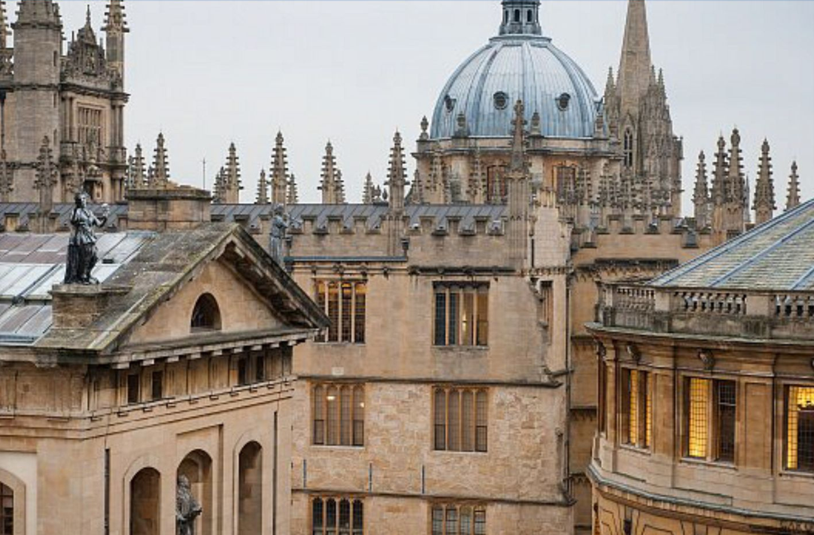
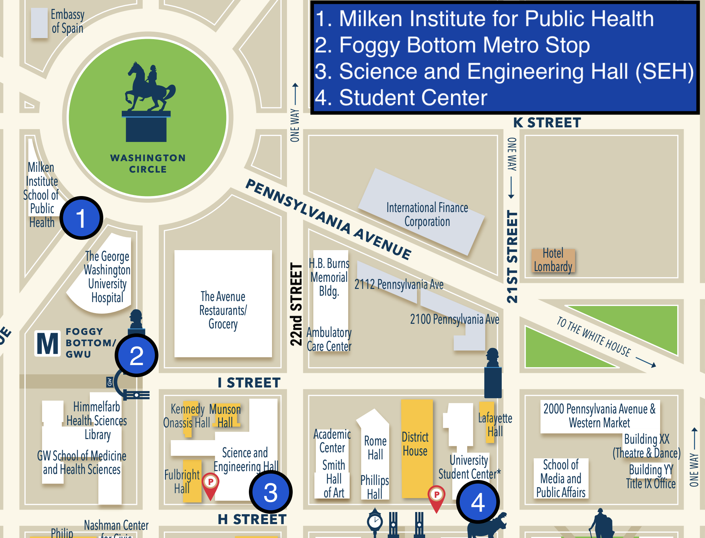
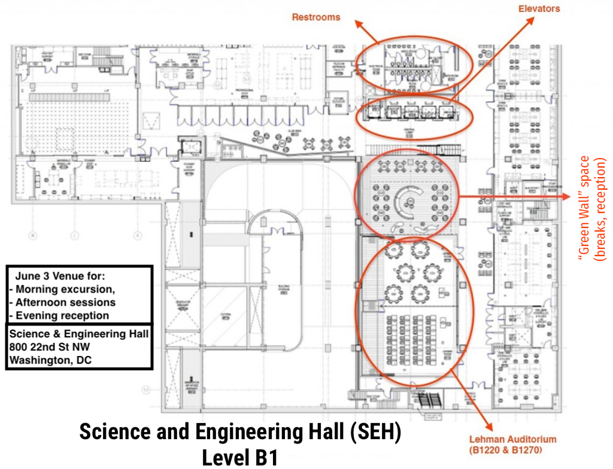
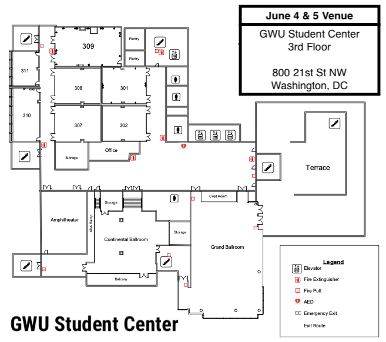

Loading schedule...
Industry Studies Association International Conference | September 3-5, 2026

Beyond the conference
Places to eat, drink, visit, shop, walk, and run during your stay.


Wednesday, June 3
Classrooms on other floors will also be used for paper sessions

Thursday, June 4 & Friday, June 5
All programming will be on the 3rd floor these days
All Conference Venues — Science & Engineering Hall · University Student Center (Marvin Center)
For all conference attendees without a GW or eduroam account.
cppm.it.gwu.edu, tap Accept or Trust.If your home institution participates in eduroam, you can connect directly.
| Help Desk | 202-994-4948 (24/7) |
| Classroom / AV | 202-994-7900 |
| ithelp@gwu.edu | |
| Online | go.gwu.edu/ithelp |
| Walk-in | Academic Center, 801 22nd St NW, Room B101 |